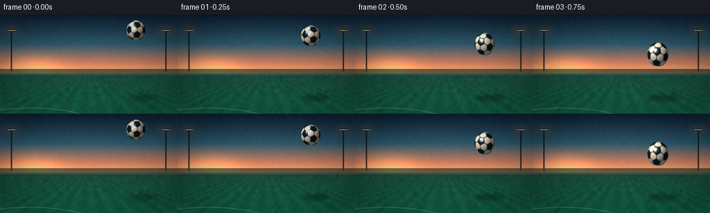
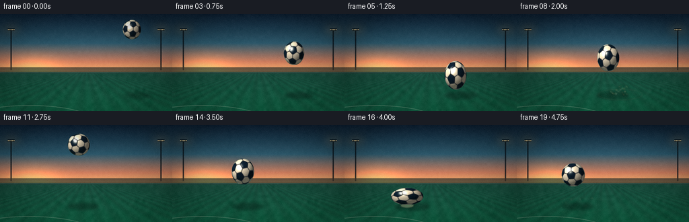
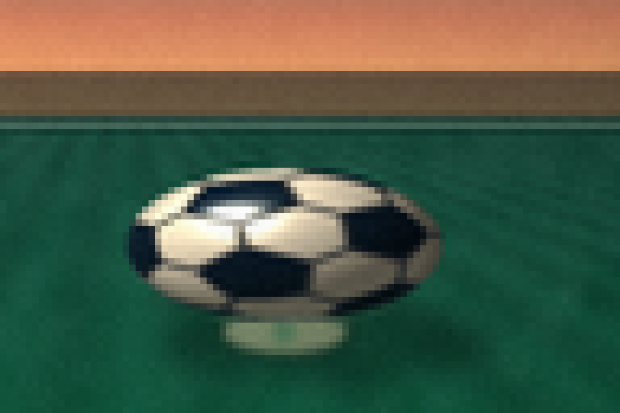
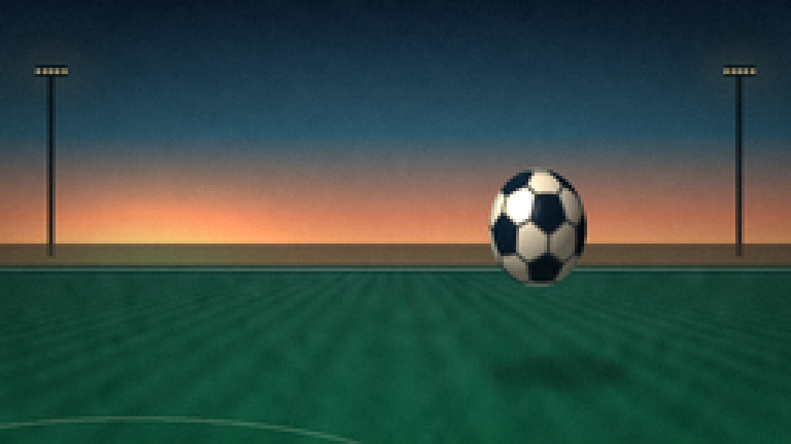
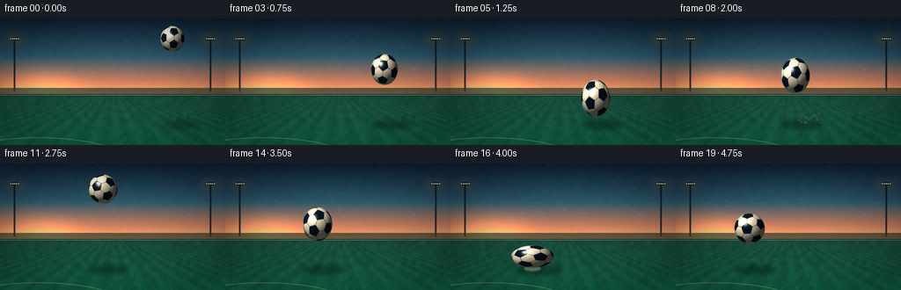

CODING AGENTS AS PIXEL WORLD MODELS
traex/DeepSeek-V4.1-Flash · phygen_029
点击播放 · 原生 RGB 像素
逐轮保存的候选
回放视频、检查图与代码变化。
每份候选均可单独播放。实际图片检查记录在下方工具轨迹中。
候选 01播放与检查图
点击播放 · 原生 RGB 像素


展开代码变化
--- 上一保存版本
+++ 本次保存版本
@@ -0,0 +1,692 @@
+from pathlib import Path
+
+import numpy as np
+from PIL import Image, ImageDraw, ImageFilter
+
+import artifact_io
+
+
+CASE_DIR = Path(__file__).resolve().parent
+WIDTH = 256
+HEIGHT = 144
+FRAMES = 20
+FPS = 4.0
+SS = 4
+
+GROUND_Y = 118.0
+HORIZON_Y = 86.0
+
+
+def smoothstep(value):
+ value = np.clip(value, 0.0, 1.0)
+ return value * value * (3.0 - 2.0 * value)
+
+
+def mix(a, b, amount):
+ return a * (1.0 - amount) + b * amount
+
+
+def rgb(values):
+ return np.asarray(values, dtype=np.float32)
+
+
+def build_ball_centers():
+ phi = (1.0 + np.sqrt(5.0)) / 2.0
+ vertices = np.asarray(
+ [
+ (0.0, 1.0, phi),
+ (0.0, -1.0, phi),
+ (0.0, 1.0, -phi),
+ (0.0, -1.0, -phi),
+ (1.0, phi, 0.0),
+ (-1.0, phi, 0.0),
+ (1.0, -phi, 0.0),
+ (-1.0, -phi, 0.0),
+ (phi, 0.0, 1.0),
+ (-phi, 0.0, 1.0),
+ (phi, 0.0, -1.0),
+ (-phi, 0.0, -1.0),
+ ],
+ dtype=np.float32,
+ )
+ vertices /= np.linalg.norm(vertices, axis=1, keepdims=True)
+
+ face_centers = []
+ edge_lengths = []
+ for first in range(len(vertices)):
+ for second in range(first + 1, len(vertices)):
+ edge_lengths.append(np.linalg.norm(vertices[first] - vertices[second]))
+ edge_length = min(edge_lengths)
+
+ for first in range(len(vertices)):
+ for second in range(first + 1, len(vertices)):
+ for third in range(second + 1, len(vertices)):
+ edges = [
+ np.linalg.norm(vertices[first] - vertices[second]),
+ np.linalg.norm(vertices[first] - vertices[third]),
+ np.linalg.norm(vertices[second] - vertices[third]),
+ ]
+ if max(edges) - edge_length < 1e-4:
+ center = vertices[first] + vertices[second] + vertices[third]
+ face_centers.append(center / np.linalg.norm(center))
+
+ pentagons = vertices
+ hexagons = np.asarray(face_centers, dtype=np.float32)
+ return np.concatenate([pentagons, hexagons], axis=0)
+
+
+def rotation_matrix(angle):
+ cx, sx = np.cos(angle * 0.54), np.sin(angle * 0.54)
+ cy, sy = np.cos(angle), np.sin(angle)
+ cz, sz = np.cos(angle * 0.23), np.sin(angle * 0.23)
+ rotate_x = np.asarray([[1.0, 0.0, 0.0], [0.0, cx, -sx], [0.0, sx, cx]])
+ rotate_y = np.asarray([[cy, 0.0, sy], [0.0, 1.0, 0.0], [-sy, 0.0, cy]])
+ rotate_z = np.asarray([[cz, -sz, 0.0], [sz, cz, 0.0], [0.0, 0.0, 1.0]])
+ return rotate_z @ rotate_y @ rotate_x
+
+
+def make_background():
+ width = WIDTH * SS
+ height = HEIGHT * SS
+ horizon = HORIZON_Y * SS
+ yy, xx = np.mgrid[0:height, 0:width].astype(np.float32)
+ canvas = np.zeros((height, width, 3), dtype=np.float32)
+
+ sky_t = np.clip(yy / horizon, 0.0, 1.0)
+ sky_stops = np.asarray([0.0, 0.50, 0.82, 1.0])
+ top = rgb((15, 35, 55))
+ middle = rgb((45, 91, 111))
+ low = rgb((204, 125, 94))
+ horizon_color = rgb((246, 183, 112))
+ for channel in range(3):
+ canvas[..., channel] = np.interp(
+ sky_t,
+ sky_stops,
+ [top[channel], middle[channel], low[channel], horizon_color[channel]],
+ )
+
+ sun_x = width * 0.19
+ sun_y = horizon - height * 0.015
+ glow = np.exp(
+ -(
+ ((xx - sun_x) / (width * 0.20)) ** 2
+ + ((yy - sun_y) / (height * 0.20)) ** 2
+ )
+ * 1.7
+ )
+ canvas += glow[..., None] * rgb((94, 58, 24))
+
+ ground_t = np.clip((yy - horizon) / (height - horizon), 0.0, 1.0)
+ ground_near = rgb((18, 103, 72))
+ ground_far = rgb((26, 75, 61))
+ ground = np.empty_like(canvas)
+ for channel in range(3):
+ ground[..., channel] = (
+ ground_far[channel] * (1.0 - ground_t)
+ + ground_near[channel] * ground_t
+ )
+
+ perspective = (xx - width * 0.50) / np.maximum(
+ yy - horizon + height * 0.055, 1.0
+ )
+ stripe = 0.5 + 0.5 * np.sin(perspective * 14.0 + 0.6)
+ ground *= (0.94 + 0.11 * stripe)[..., None]
+ ground_mask = (yy >= horizon)[..., None]
+ canvas = np.where(ground_mask, ground, canvas)
+
+ rng = np.random.default_rng(29)
+ noise_small = rng.normal(0.0, 1.0, (36, 64)).astype(np.float32)
+ noise_image = Image.fromarray(
+ np.clip(noise_small * 28.0 + 128.0, 0, 255).astype(np.uint8), "L"
+ ).resize((width, height), Image.Resampling.BICUBIC)
+ noise = (np.asarray(noise_image, dtype=np.float32) - 128.0) / 28.0
+ canvas += noise[..., None] * np.where(ground_mask, 2.5, 1.0)
+
+ image = Image.fromarray(np.clip(canvas, 0, 255).astype(np.uint8), "RGB").convert(
+ "RGBA"
+ )
+ overlay = Image.new("RGBA", image.size, (0, 0, 0, 0))
+ draw = ImageDraw.Draw(overlay)
+
+ draw.rectangle(
+ [(0, horizon - 7 * SS), (width, horizon + 2 * SS)],
+ fill=(8, 24, 31, 150),
+ )
+ draw.line(
+ [(0, horizon + 1 * SS), (width, horizon + 1 * SS)],
+ fill=(224, 236, 207, 75),
+ width=SS,
+ )
+ draw.arc(
+ [
+ (-width * 0.24, height * 0.94),
+ (width * 0.58, height * 1.35),
+ ],
+ 195,
+ 345,
+ fill=(233, 240, 216, 72),
+ width=SS,
+ )
+
+ for pole_x in (width * 0.065, width * 0.935):
+ draw.line(
+ [(pole_x, horizon - 3 * SS), (pole_x, height * 0.16)],
+ fill=(8, 18, 25, 195),
+ width=2 * SS,
+ )
+ lamp_y = height * 0.16
+ draw.rectangle(
+ [
+ (pole_x - 5 * SS, lamp_y - 1.6 * SS),
+ (pole_x + 5 * SS, lamp_y + 1.6 * SS),
+ ],
+ fill=(10, 22, 28, 205),
+ )
+ for lamp in range(5):
+ lamp_x = pole_x + (lamp - 2) * 2.1 * SS
+ draw.ellipse(
+ [
+ (lamp_x - 0.75 * SS, lamp_y - 0.75 * SS),
+ (lamp_x + 0.75 * SS, lamp_y + 0.75 * SS),
+ ],
+ fill=(255, 226, 166, 235),
+ )
+
+ glow_layer = Image.new("RGBA", image.size, (0, 0, 0, 0))
+ glow_draw = ImageDraw.Draw(glow_layer)
+ for pole_x in (width * 0.065, width * 0.935):
+ lamp_y = height * 0.16
+ glow_draw.ellipse(
+ [
+ (pole_x - 16 * SS, lamp_y - 10 * SS),
+ (pole_x + 16 * SS, lamp_y + 10 * SS),
+ ],
+ fill=(255, 180, 95, 42),
+ )
+ glow_layer = glow_layer.filter(ImageFilter.GaussianBlur(7 * SS))
+ image = Image.alpha_composite(image, glow_layer)
+ image = Image.alpha_composite(image, overlay)
+
+ sky_band = Image.new("RGBA", image.size, (0, 0, 0, 0))
+ band_draw = ImageDraw.Draw(sky_band)
+ for y, alpha in ((height * 0.20, 18), (height * 0.29, 13), (height * 0.36, 10)):
+ band_draw.ellipse(
+ [
+ (width * 0.20, y),
+ (width * 0.86, y + 5.5 * SS),
+ ],
+ fill=(240, 190, 145, alpha),
+ )
+ sky_band = sky_band.filter(ImageFilter.GaussianBlur(5 * SS))
+ image = Image.alpha_composite(image, sky_band)
+ return np.asarray(image.convert("RGB"), dtype=np.float32)
+
+
+def composite_rgba(canvas, rgba, x0, y0):
+ height, width = rgba.shape[:2]
+ y1, x1 = y0 + height, x0 + width
+ target = canvas[y0:y1, x0:x1]
+ alpha = rgba[..., 3:4] / 255.0
+ canvas[y0:y1, x0:x1] = target * (1.0 - alpha) + rgba[..., :3] * alpha
+
+
+def draw_ball(canvas, centers, cx, cy, radius, scale_x, scale_y, angle):
+ radius_x = radius * scale_x
+ radius_y = radius * scale_y
+ margin = 3 * SS
+ x0 = max(0, int(np.floor(cx - radius_x - margin)))
+ x1 = min(canvas.shape[1], int(np.ceil(cx + radius_x + margin)))
+ y0 = max(0, int(np.floor(cy - radius_y - margin)))
+ y1 = min(canvas.shape[0], int(np.ceil(cy + radius_y + margin)))
+
+ local_w = x1 - x0
+ local_h = y1 - y0
+ if local_w <= 0 or local_h <= 0:
+ return
+
+ yy, xx = np.mgrid[y0:y1, x0:x1].astype(np.float32)
+ xx += 0.5
+ yy += 0.5
+ qx = (xx - cx) / max(radius_x, 1.0)
+ qy = (yy - cy) / max(radius_y, 1.0)
+ radial = qx * qx + qy * qy
+ inside = radial <= 1.0
+ depth = np.sqrt(np.maximum(0.0, 1.0 - radial))
+
+ rotate = rotation_matrix(angle)
+ rotated_centers = centers @ rotate.T
+ dots = (
+ qx[..., None] * rotated_centers[:, 0]
+ + qy[..., None] * rotated_centers[:, 1]
+ + depth[..., None] * rotated_centers[:, 2]
+ )
+ partition = np.partition(dots, -2, axis=2)
+ nearest_dot = partition[..., -1]
+ second_dot = partition[..., -2]
+ nearest = np.argmax(dots, axis=2)
+ is_pentagon = nearest < 12
+
+ hex_color = rgb((246, 239, 220))
+ pentagon_color = rgb((13, 32, 51))
+ color = np.where(is_pentagon[..., None], pentagon_color, hex_color)
+
+ light = np.asarray([-0.50, -0.64, 0.58], dtype=np.float32)
+ light /= np.linalg.norm(light)
+ normal = np.stack([qx, qy, depth], axis=2)
+ diffuse = np.clip(
+ normal[..., 0] * light[0]
+ + normal[..., 1] * light[1]
+ + normal[..., 2] * light[2],
+ 0.0,
+ 1.0,
+ )
+ shade = 0.38 + 0.74 * diffuse
+ color = color * shade[..., None]
+ color *= rgb((1.04, 1.0, 0.94))
+
+ view = np.asarray([0.0, 0.0, 1.0], dtype=np.float32)
+ half_vector = light + view
+ half_vector /= np.linalg.norm(half_vector)
+ specular_angle = np.clip(
+ normal[..., 0] * half_vector[0]
+ + normal[..., 1] * half_vector[1]
+ + normal[..., 2] * half_vector[2],
+ 0.0,
+ 1.0,
+ )
+ specular = np.power(specular_angle, 52.0) * 1.45
+ color += specular[..., None] * rgb((255, 235, 199))
+
+ rim = np.clip((radial - 0.78) / 0.22, 0.0, 1.0)
+ color *= (1.0 - 0.33 * rim[..., None])
+ edge_light = np.power(rim, 2.0) * np.clip(1.0 - qx * 0.7, 0.0, 1.0)
+ color += edge_light[..., None] * rgb((58, 128, 128)) * 0.30
+
+ bounce = np.clip(qy, 0.0, 1.0) ** 2 * 0.10
+ color += bounce[..., None] * rgb((40, 110, 72))
+
+ seam_width = 0.045
+ seam = np.clip((seam_width - (nearest_dot - second_dot)) / seam_width, 0.0, 1.0)
+ seam_color = rgb((24, 30, 37))
+ color = color * (1.0 - 0.87 * seam[..., None]) + seam_color * (
+ 0.87 * seam[..., None]
+ )
+
+ glint = np.exp(
+ -(
+ ((qx + 0.39) / 0.115) ** 2
+ + ((qy + 0.43) / 0.075) ** 2
+ )
+ )
+ color += glint[..., None] * rgb((255, 248, 224)) * 0.72
+
+ alpha = inside.astype(np.float32) * 255.0
+ rgba = np.zeros((local_h, local_w, 4), dtype=np.float32)
+ rgba[..., :3] = np.clip(color, 0.0, 255.0)
+ rgba[..., 3] = alpha
+ composite_rgba(canvas, rgba, x0, y0)
+
+
+def draw_shadow(canvas, cx, cy, radius, scale_y):
+ bottom = cy + radius * scale_y
+ height = max(0.0, GROUND_Y - bottom)
+ shadow_x = cx + 7.0 * SS + height * 0.15 * SS
+ shadow_y = (GROUND_Y + 3.0) * SS
+ shadow_w = radius * SS * (1.35 + height * 0.012)
+ shadow_h = max(2.5 * SS, radius * SS * (0.31 + height * 0.002))
+ alpha = int(np.clip(76.0 * np.exp(-height / 58.0) + 6.0, 6.0, 88.0))
+
+ layer = Image.new("RGBA", (canvas.shape[1], canvas.shape[0]), (0, 0, 0, 0))
+ draw = ImageDraw.Draw(layer)
+ draw.ellipse(
+ [
+ (shadow_x - shadow_w, shadow_y - shadow_h),
+ (shadow_x + shadow_w, shadow_y + shadow_h),
+ ],
+ fill=(2, 14, 10, alpha),
+ )
+ blur = float(2.0 * SS + height * 0.035 * SS)
+ layer = layer.filter(ImageFilter.GaussianBlur(blur))
+ shadow = np.asarray(layer, dtype=np.float32)
+ alpha_channel = shadow[..., 3:4] / 255.0
+ canvas[:] = canvas * (1.0 - alpha_channel) + shadow[..., :3] * alpha_channel
+
+
+def draw_motion_streaks(canvas, xs, ys, radii, frame):
+ if frame == 0:
+ direction = np.asarray([xs[1] - xs[0], ys[1] - ys[0]], dtype=np.float32)
+ elif frame >= FRAMES - 1:
+ return
+ else:
+ direction = np.asarray(
+ [xs[frame] - xs[frame - 1], ys[frame] - ys[frame - 1]],
+ dtype=np.float32,
+ )
+ speed = np.linalg.norm(direction)
+ if speed < 4.0 or frame in (6, 16):
+ return
+ direction /= speed
+ perpendicular = np.asarray([-direction[1], direction[0]], dtype=np.float32)
+ length = min(28.0, speed * 0.92)
+ radius = radii[frame]
+
+ layer = Image.new("RGBA", (canvas.shape[1], canvas.shape[0]), (0, 0, 0, 0))
+ draw = ImageDraw.Draw(layer)
+ for offset, alpha in ((-0.63, 25), (-0.30, 37), (0.0, 45), (0.34, 34), (0.67, 21)):
+ start = (
+ (xs[frame] + perpendicular[0] * offset * radius)
+ * SS,
+ (ys[frame] + perpendicular[1] * offset * radius) * SS,
+ )
+ end = (
+ (xs[frame] + perpendicular[0] * offset * radius - direction[0] * length)
+ * SS,
+ (ys[frame] + perpendicular[1] * offset * radius - direction[1] * length)
+ * SS,
+ )
+ draw.line([start, end], fill=(255, 222, 174, alpha), width=SS)
+ layer = layer.filter(ImageFilter.GaussianBlur(1.5 * SS))
+ streak = np.asarray(layer, dtype=np.float32)
+ alpha_channel = streak[..., 3:4] / 255.0
+ canvas[:] = canvas * (1.0 - alpha_channel) + streak[..., :3] * alpha_channel
+
+
+def draw_impact(canvas, contact_frame, frame, strength):
+ age_frames = frame - contact_frame
+ if age_frames < 0 or age_frames > 4:
+ return
+ age = age_frames / FPS
+ contact_x = 0.0
+ if contact_frame == 6:
+ contact_x = 154.0
+ else:
+ contact_x = 93.0
+ contact_x *= SS
+ contact_y = (GROUND_Y + 1.5) * SS
+
+ layer = Image.new("RGBA", (canvas.shape[1], canvas.shape[0]), (0, 0, 0, 0))
+ draw = ImageDraw.Draw(layer)
+ fade = max(0.0, 1.0 - age_frames / 4.5) ** 1.35
+
+ if age_frames <= 1:
+ flash = 1.0 if age_frames == 0 else 0.45
+ draw.ellipse(
+ [
+ (contact_x - 10 * SS, contact_y - 3.5 * SS),
+ (contact_x + 10 * SS, contact_y + 3.5 * SS),
+ ],
+ fill=(255, 230, 177, int(120 * flash * strength)),
+ )
+
+ ring_x = (9.0 + age_frames * 12.0) * SS
+ ring_y = (2.0 + age_frames * 3.2) * SS
+ draw.ellipse(
+ [
+ (contact_x - ring_x, contact_y - ring_y),
+ (contact_x + ring_x, contact_y + ring_y),
+ ],
+ outline=(255, 231, 184, int(125 * fade * strength)),
+ width=max(SS, int(1.1 * SS)),
+ )
+
+ rng = np.random.default_rng(100 + contact_frame)
+ for particle in range(30):
+ angle = rng.uniform(0.08 * np.pi, 0.92 * np.pi)
+ speed = rng.uniform(11.0, 37.0)
+ vx = np.cos(angle) * speed
+ vy = -np.sin(angle) * speed
+ px = contact_x + vx * age * SS
+ py = contact_y + (vy * age + 10.0 * age * age) * SS
+ size = rng.uniform(0.45, 1.6) * SS
+ alpha = int(
+ np.clip((1.0 - age_frames / 4.0) * rng.uniform(70, 160) * strength, 0, 180)
+ )
+ palette = (
+ (245, 225, 177),
+ (159, 206, 147),
+ (224, 140, 88),
+ (223, 240, 212),
+ )
+ color = palette[particle % len(palette)]
+ draw.ellipse(
+ [(px - size, py - size), (px + size, py + size)],
+ fill=(*color, alpha),
+ )
+
+ if age_frames <= 1:
+ for ray in range(9):
+ angle = np.pi * (0.16 + ray * 0.085)
+ inner = (8.0 + age_frames * 5.0) * SS
+ outer = (22.0 + age_frames * 9.0 + rng.uniform(-4, 4)) * SS
+ start = (
+ contact_x + np.cos(angle) * inner,
+ contact_y - np.sin(angle) * inner * 0.45,
+ )
+ end = (
+ contact_x + np.cos(angle) * outer,
+ contact_y - np.sin(angle) * outer * 0.48,
+ )
+ draw.line(
+ [start, end],
+ fill=(255, 235, 190, int(95 * strength)),
+ width=SS,
+ )
+
+ layer = layer.filter(ImageFilter.GaussianBlur(0.85 * SS))
+ effect = np.asarray(layer, dtype=np.float32)
+ alpha_channel = effect[..., 3:4] / 255.0
+ canvas[:] = canvas * (1.0 - alpha_channel) + effect[..., :3] * alpha_channel
+
+
+def add_finish(image, frame):
+ yy, xx = np.mgrid[0:HEIGHT, 0:WIDTH].astype(np.float32)
+ nx = (xx - WIDTH / 2.0) / (WIDTH / 2.0)
+ ny = (yy - HEIGHT / 2.0) / (HEIGHT / 2.0)
+ vignette = np.clip(1.0 - 0.22 * (nx * nx + ny * ny), 0.70, 1.0)
+ image *= vignette[..., None]
+
+ bloom_source = np.clip(image - 193.0, 0.0, None)
+ bloom_image = Image.fromarray(np.clip(bloom_source, 0, 255).astype(np.uint8), "RGB")
+ bloom_image = bloom_image.filter(ImageFilter.GaussianBlur(1.3))
+ bloom = np.asarray(bloom_image, dtype=np.float32)
+ image += bloom * 0.23
+
+ rng = np.random.default_rng(400 + frame)
+ grain = rng.normal(0.0, 1.35, (HEIGHT, WIDTH, 1)).astype(np.float32)
+ image += grain
+ return np.clip(image, 0, 255).astype(np.uint8)
+
+
+def main():
+ centers = build_ball_centers()
+ background = make_background()
+
+ xs = np.asarray(
+ [
+ 196,
+ 192,
+ 187,
+ 181,
+ 174,
+ 165,
+ 154,
+ 145,
+ 136,
+ 128,
+ 121,
+ 117,
+ 114,
+ 110,
+ 105,
+ 99,
+ 93,
+ 89,
+ 86,
+ 84,
+ ],
+ dtype=np.float32,
+ )
+ ys = np.asarray(
+ [
+ 23,
+ 31,
+ 43,
+ 58,
+ 74,
+ 91,
+ 106,
+ 87,
+ 65,
+ 46,
+ 32,
+ 29,
+ 36,
+ 50,
+ 69,
+ 91,
+ 106,
+ 92,
+ 82,
+ 74,
+ ],
+ dtype=np.float32,
+ )
+ radii = np.asarray(
+ [
+ 14.0,
+ 14.5,
+ 15.2,
+ 16.0,
+ 16.8,
+ 17.8,
+ 19.2,
+ 18.8,
+ 18.0,
+ 17.2,
+ 16.7,
+ 16.5,
+ 16.7,
+ 17.0,
+ 17.6,
+ 18.4,
+ 19.5,
+ 18.5,
+ 17.8,
+ 17.3,
+ ],
+ dtype=np.float32,
+ )
+ scale_x = np.asarray(
+ [
+ 0.97,
+ 0.97,
+ 0.96,
+ 0.95,
+ 0.94,
+ 0.92,
+ 1.28,
+ 0.86,
+ 0.91,
+ 0.96,
+ 1.00,
+ 1.00,
+ 1.00,
+ 0.98,
+ 0.95,
+ 0.92,
+ 1.24,
+ 0.89,
+ 0.95,
+ 1.00,
+ ],
+ dtype=np.float32,
+ )
+ scale_y = np.asarray(
+ [
+ 1.04,
+ 1.04,
+ 1.07,
+ 1.10,
+ 1.14,
+ 1.19,
+ 0.62,
+ 1.28,
+ 1.12,
+ 1.03,
+ 1.00,
+ 1.00,
+ 1.00,
+ 1.02,
+ 1.10,
+ 1.18,
+ 0.65,
+ 1.22,
+ 1.08,
+ 1.00,
+ ],
+ dtype=np.float32,
+ )
+ spin_steps = np.asarray(
+ [
+ 0.15,
+ 0.22,
+ 0.26,
+ 0.30,
+ 0.34,
+ 0.38,
+ 0.25,
+ 0.30,
+ 0.30,
+ 0.28,
+ 0.24,
+ 0.20,
+ 0.22,
+ 0.24,
+ 0.28,
+ 0.34,
+ 0.22,
+ 0.25,
+ 0.22,
+ 0.20,
+ ],
+ dtype=np.float32,
+ )
+ spin = np.cumsum(spin_steps)
+
+ frames = []
+ for frame in range(FRAMES):
+ canvas = background.copy()
+ draw_shadow(
+ canvas,
+ xs[frame] * SS,
+ ys[frame] * SS,
+ radii[frame],
+ scale_y[frame],
+ )
+ draw_motion_streaks(canvas, xs, ys, radii, frame)
+ if frame >= 5:
+ draw_impact(canvas, 6, frame, 1.0)
+ if frame >= 15:
+ draw_impact(canvas, 16, frame, 0.72)
+ draw_ball(
+ canvas,
+ centers,
+ xs[frame] * SS,
+ ys[frame] * SS,
+ radii[frame] * SS,
+ scale_x[frame],
+ scale_y[frame],
+ spin[frame],
+ )
+ high_res = Image.fromarray(
+ np.clip(canvas, 0, 255).astype(np.uint8), "RGB"
+ ).resize((WIDTH, HEIGHT), Image.Resampling.LANCZOS)
+ image = add_finish(np.asarray(high_res, dtype=np.float32), frame)
+ frames.append(image)
+
+ frames = np.asarray(frames, dtype=np.uint8)
+ artifact_io.save(frames, CASE_DIR)
+
+
+if __name__ == "__main__":
+ main()
候选 02播放与检查图
点击播放 · 原生 RGB 像素
展开代码变化
--- 上一保存版本
+++ 本次保存版本
@@ -266,8 +266,8 @@
nearest = np.argmax(dots, axis=2)
is_pentagon = nearest < 12
- hex_color = rgb((246, 239, 220))
- pentagon_color = rgb((13, 32, 51))
+ hex_color = rgb((252, 245, 223))
+ pentagon_color = rgb((7, 22, 39))
color = np.where(is_pentagon[..., None], pentagon_color, hex_color)
light = np.asarray([-0.50, -0.64, 0.58], dtype=np.float32)
@@ -280,7 +280,7 @@
0.0,
1.0,
)
- shade = 0.38 + 0.74 * diffuse
+ shade = 0.24 + 0.91 * diffuse
color = color * shade[..., None]
color *= rgb((1.04, 1.0, 0.94))
@@ -294,7 +294,7 @@
0.0,
1.0,
)
- specular = np.power(specular_angle, 52.0) * 1.45
+ specular = np.power(specular_angle, 64.0) * 1.15
color += specular[..., None] * rgb((255, 235, 199))
rim = np.clip((radial - 0.78) / 0.22, 0.0, 1.0)
@@ -305,11 +305,11 @@
bounce = np.clip(qy, 0.0, 1.0) ** 2 * 0.10
color += bounce[..., None] * rgb((40, 110, 72))
- seam_width = 0.045
+ seam_width = 0.026
seam = np.clip((seam_width - (nearest_dot - second_dot)) / seam_width, 0.0, 1.0)
- seam_color = rgb((24, 30, 37))
- color = color * (1.0 - 0.87 * seam[..., None]) + seam_color * (
- 0.87 * seam[..., None]
+ seam_color = rgb((25, 32, 39))
+ color = color * (1.0 - 0.58 * seam[..., None]) + seam_color * (
+ 0.58 * seam[..., None]
)
glint = np.exp(
@@ -318,7 +318,7 @@
+ ((qy + 0.43) / 0.075) ** 2
)
)
- color += glint[..., None] * rgb((255, 248, 224)) * 0.72
+ color += glint[..., None] * rgb((255, 248, 224)) * 0.52
alpha = inside.astype(np.float32) * 255.0
rgba = np.zeros((local_h, local_w, 4), dtype=np.float32)
候选 03播放与检查图

候选 04播放与检查图
点击播放 · 原生 RGB 像素

展开代码变化
--- 上一保存版本
+++ 本次保存版本
@@ -137,12 +137,12 @@
rng = np.random.default_rng(29)
noise_small = rng.normal(0.0, 1.0, (36, 64)).astype(np.float32)
noise_image = Image.fromarray(
- np.clip(noise_small * 28.0 + 128.0, 0, 255).astype(np.uint8), "L"
+ np.clip(noise_small * 28.0 + 128.0, 0, 255).astype(np.uint8)
).resize((width, height), Image.Resampling.BICUBIC)
noise = (np.asarray(noise_image, dtype=np.float32) - 128.0) / 28.0
canvas += noise[..., None] * np.where(ground_mask, 2.5, 1.0)
- image = Image.fromarray(np.clip(canvas, 0, 255).astype(np.uint8), "RGB").convert(
+ image = Image.fromarray(np.clip(canvas, 0, 255).astype(np.uint8)).convert(
"RGBA"
)
overlay = Image.new("RGBA", image.size, (0, 0, 0, 0))
@@ -486,7 +486,7 @@
image *= vignette[..., None]
bloom_source = np.clip(image - 193.0, 0.0, None)
- bloom_image = Image.fromarray(np.clip(bloom_source, 0, 255).astype(np.uint8), "RGB")
+ bloom_image = Image.fromarray(np.clip(bloom_source, 0, 255).astype(np.uint8))
bloom_image = bloom_image.filter(ImageFilter.GaussianBlur(1.3))
bloom = np.asarray(bloom_image, dtype=np.float32)
image += bloom * 0.23
@@ -679,7 +679,7 @@
spin[frame],
)
high_res = Image.fromarray(
- np.clip(canvas, 0, 255).astype(np.uint8), "RGB"
+ np.clip(canvas, 0, 255).astype(np.uint8)
).resize((WIDTH, HEIGHT), Image.Resampling.LANCZOS)
image = add_finish(np.asarray(high_res, dtype=np.float32), frame)
frames.append(image)
可观测工具轨迹
实际执行的命令与返回图片。
命令 1exit 0
/bin/bash -c "pwd && rg --files -g 'prompt.txt' -g 'GENERATION_RULES.md' -g 'task_spec.json' -g '"'!*.pyc'"'"
命令 2exit 0
/bin/bash -c 'ls -la'
命令 3exit 0
/bin/bash -c 'cat prompt.txt'
命令 4exit 0
/bin/bash -c 'cat GENERATION_RULES.md'
命令 5exit 0
/bin/bash -c 'cat task_spec.json'
命令 6exit 0
/bin/bash -c "sed -n '1,240p' artifact_io.py"
命令 7exit 1
/bin/bash -c 'python generate.py'
命令 8exit 0
/bin/bash -c 'python generate.py'
命令 9exit 0
/bin/bash -c "python - <<'PY'
from PIL import Image
im=Image.open('frames/06.png')
im.crop((110,68,206,132)).resize((768,512),Image.Resampling.NEAREST).save('.tmp/contact_zoom.png')
PY"命令 10exit 0
/bin/bash -c "python - <<'PY'
import numpy as np
from PIL import Image
im=np.asarray(Image.open('frames/06.png'))
# center 154,106 r 19x~12
Y,X=np.mgrid[:144,:256]
m=((X-154)/24)**2+((Y-106)/13)**2<=1
p=im[m]
print(len(p), p.min(axis=0), p.max(axis=0), np.percentile(p[:,0],[1,5,10,25,50,75,90,99]))
print('dark', (p.mean(1)<60).sum(), 'verylight',(p.mean(1)>220).sum())
PY"命令 11exit 0
/bin/bash -c "python - <<'PY'
from PIL import Image
for i in [2,4,8,12,18]:
im=Image.open(f'frames/{i:02d}.png')
im.resize((1024,576),Image.Resampling.NEAREST).save(f'.tmp/frame{i:02d}_zoom.png')
PY"命令 12exit 0
/bin/bash -c 'python generate.py'
命令 13exit 0
/bin/bash -c "python - <<'PY'
from pathlib import Path
import json, numpy as np
from PIL import Image
spec=json.loads(Path('task_spec.json').read_text())
data=np.load('pixels.npz')['pixels']
print('pixels', data.shape, data.dtype)
frames=sorted(Path('frames').glob('*.png'))
print('png_frames', len(frames), 'sizes', sorted({Image.open(p).size for p in frames}))
print('html', Path('index.html').stat().st_size)
print('inspection', Image.open('inspection.png').size)
assert data.shape == (spec['height'], spec['width'], spec['frames'])
assert len(frames)==spec['frames']
PY"命令 14exit 0
/bin/bash -c "python - <<'PY'
from PIL import Image
import numpy as np
ims=[np.asarray(Image.open(f'frames/{i:02d}.png'),dtype=np.float32) for i in range(20)]
diffs=[np.abs(ims[i]-ims[i-1]).mean() for i in range(1,20)]
print('mean_adjacent_diff', round(float(np.mean(diffs)),3))
print('range', round(min(diffs),3), round(max(diffs),3))
print('nonblank_range', [(int(a.min()),int(a.max())) for a in ims[::5]])
PY"命令 15exit 0
/bin/bash -c 'git status --short 2>/dev/null || true; ls -lh index.html pixels.npz inspection.png generate.py'
命令 16exit 0
/bin/bash -c "python - <<'PY'
from pathlib import Path
p=Path('generate.py')
s=p.read_text()
s=s.replace(' noise_image = Image.fromarray(\\n np.clip(noise_small * 28.0 + 128.0, 0, 255).astype(np.uint8), \"L\"\\n )', ' noise_image = Image.fromarray(\\n np.clip(noise_small * 28.0 + 128.0, 0, 255).astype(np.uint8)\\n )')
s=s.replace(' image = Image.fromarray(np.clip(canvas, 0, 255).astype(np.uint8), \"RGB\").convert(\\n \"RGBA\"\\n )', ' image = Image.fromarray(np.clip(canvas, 0, 255).astype(np.uint8)).convert(\\n \"RGBA\"\\n )')
s=s.replace(' high_res = Image.fromarray(\\n np.clip(canvas, 0, 255).astype(np.uint8), \"RGB\"\\n ).resize((WIDTH, HEIGHT), Image.Resampling.LANCZOS)', ' high_res = Image.fromarray(\\n np.clip(canvas, 0, 255).astype(np.uint8)\\n ).resize((WIDTH, HEIGHT), Image.Resampling.LANCZOS)')
s=s.replace(' bloom_image = Image.fromarray(np.clip(bloom_source, 0, 255).astype(np.uint8), \"RGB\")', ' bloom_image = Image.fromarray(np.clip(bloom_source, 0, 255).astype(np.uint8))')
p.write_text(s)
PY
python generate.py
python - <<'PY'
from pathlib import Path
import json, numpy as np
from PIL import Image
spec=json.loads(Path('task_spec.json').read_text())
data=np.load('pixels.npz')['pixels']
frames=sorted(Path('frames').glob('*.png'))
assert data.shape == (spec['height'], spec['width'], spec['frames'])
assert len(frames)==spec['frames']
assert all(Image.open(p).size==(spec['width'],spec['height']) for p in frames)
print('validated:', len(frames), 'frames at', spec['width'], 'x', spec['height'])
PY"视觉工具实际返回图片 1

视觉工具实际返回图片 2

视觉工具实际返回图片 3

视觉工具实际返回图片 4

保存候选 4 份；完成命令 16 次；可验证图片返回 4 张。原始 API 响应与完整日志保留在本地。